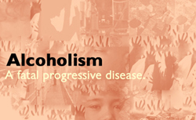

Why. The. Alcoholic. Drinks.
1 Obsession: Alcohol is a crutch used to help them cope with emotional pain and thus
Alcoholics depend on alcohol so much that the alcoholics are convinced that they cannot live without it.
2 Addiction: The withdrawal symptoms from alcohol can be so intense that for some alcoholics drinking is the only solution to the pain of withdrawal.
3 Compulsion: Most alcoholics would like to be social drinkers. They work hard to control their drinking so they can drink like other people. Alcoholics can end up getting drunk when they promised themselves that they wouldn't.
